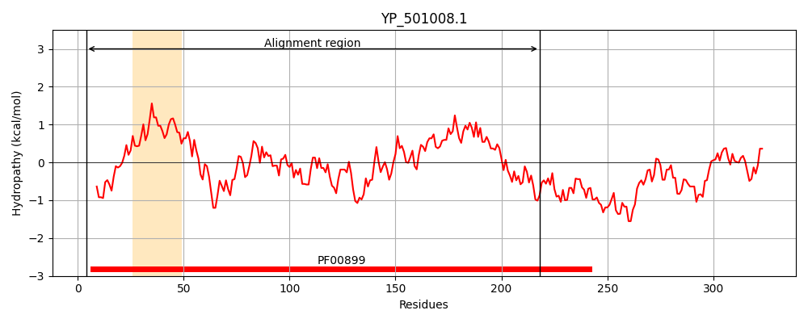
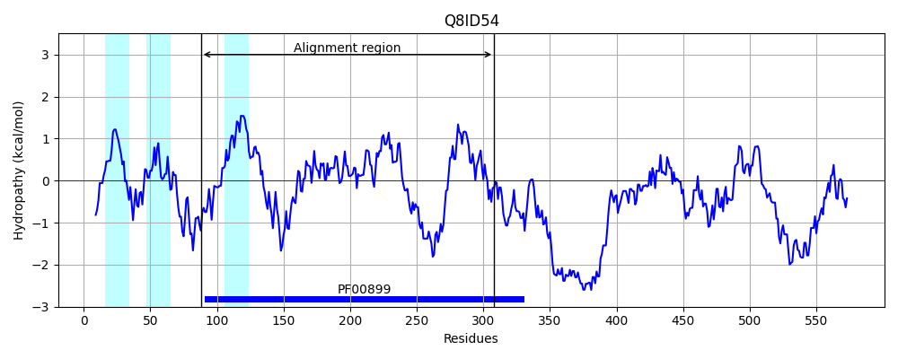
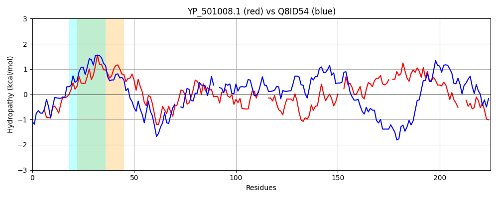

Hit Accession: Q8ID54
Hit TCID: 3.A.25.2.1
Hit Description: gnl|BL_ORD_ID|16318 gnl|TC-DB|Q8ID54|3.A.25.2.1 UBA/THIF-type NAD/FAD binding protein, putative OS=Plasmodium falciparum (isolate 3D7) GN=PF13_0344 PE=4 SV=1
Mach Len: 225
e:0.000000
Query TMS Count : 1
Hit TMS Count: 3
TMS-Overlap Score: 0.750000
Predicted Substrates:CHEBI:16670;peptide
BLAST Alignment:
Score: 170 , Bit scores: 70 bits, E-value: 2.7e-13, Alignment length: 225, Percentage identity: 27
Query: 4 ERYSRQILFKQIGEIGQSKINQKCALIIGMGALGTHVAEGLVRAGIAKLIIVDRDYIEFSNLQRQTLFTEEDALKMMPKVVAAKKHLLALRSDVDIDDYIAHVDYYFLETHG----QDVDVIIDATDNFETRQLINDFAYKYRIPWIYGGV--VQSTYTEAAFIPGKTPCFNCLVP-QLPALNLTCDTVGVIQPAVTMATSLQLRDAMKV---LTEQPIDTKITY 218
+R+ + + I KI LIIG+G LG+ V L + G ++ +VD D +E SNL RQ + E+ + K ++AK L + DV + D I ++ + +G ++ D+IID TDN TR LIND Y+ I+ + + C+ CL + N CD G++ + LQ + +K+ L + + +TY
Sbjct: 88 DRHGKLLNIYDIPHDSLYKIFNTKILIIGLGGLGSPVCLYLSKFGFKEIGLVDGDKVEKSNLHRQIIHKEK--YIGLNKCISAKLFLKDM--DVHVSDCIKCYPFFLDKLNGINIIKEYDIIIDCTDNISTRFLINDLCILYKKKLIFASALGIYGQVNVYNLNNNTSSCYRCLKSFNNHSQNNDCDENGILSTVTGVIGLLQANEVIKLSIGLDQDVLTNFLTY 308 | Protein Hydropathy Plots: |
|---|
|  |  |
Pairwise Alignment-Hydropathy Plot:
|
|---|
|  |